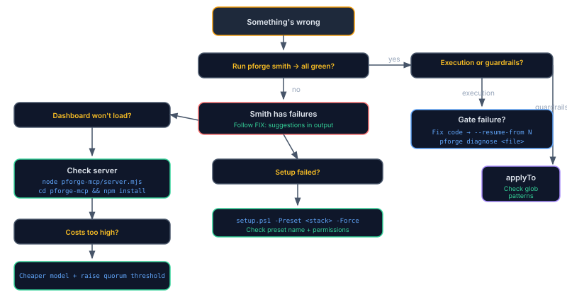

Chapter 14
Troubleshooting
"Something's wrong." Find the answer fast.
Key terms: Glossary defines every Plan Forge term. If you see "scope contract," "validation gate," "slice," or "applyTo" and aren't sure what they mean, check there first.
Diagnostic Tools

| Tool | What It Checks | When to Use |
|---|---|---|
pforge smith | Environment, VS Code config, setup health, version | First thing when anything seems off |
pforge check | Setup file existence and validity | After setup or update |
pforge diagnose <file> | Multi-model bug investigation on a specific file | When a slice fails and you can't see why |
Agent Isn't Following Guardrails
| Symptom | Cause | Fix |
|---|---|---|
| AI ignores coding standards | Instruction files not loading | Check applyTo pattern matches the file you're editing. Run pforge smith to verify file counts. |
| Wrong instructions loading | applyTo glob too broad | Narrow the pattern — use **/auth/** instead of ** |
| Guardrails load but AI ignores them | Context budget exceeded | Reduce copilot-instructions.md to <80 lines. Remove applyTo: '**' from non-essential files. |
| Project Principles not enforced | PROJECT-PRINCIPLES.md missing | Run the project-principles prompt. The instruction file activates only when this file exists. |
Plan Execution Fails
| Symptom | Cause | Fix |
|---|---|---|
| Gate fails with build errors | Code doesn't compile | Fix the build error, then pforge run-plan --resume-from N |
| Gate fails — tests regress | New code broke existing tests | Fix the regression. Check if scope contract is too broad. |
| Slice times out | Context window exhausted or model overloaded | Split the slice into smaller chunks. Try a different --model. |
| Model returns error | API key invalid or rate limited | Check XAI_API_KEY / OPENAI_API_KEY env vars. Wait for rate limit reset. |
| Scope violation detected | AI touched forbidden files | The PreToolUse hook should catch this. If not, tighten the Scope Contract. |
| Escalation exhausted | All models in chain failed | Review the slice — it may be too complex. Break into sub-slices or simplify gates. |
Dashboard Won't Load
| Symptom | Cause | Fix |
|---|---|---|
| Connection refused on :3100 | Server not running | node pforge-mcp/server.mjs |
| Port already in use | Another process on 3100 | node pforge-mcp/server.mjs --port 4100 or kill the conflicting process |
| Blank page loads | Missing node_modules | cd pforge-mcp && npm install |
| WebSocket disconnects | Firewall or proxy blocking :3101 | Allow port 3101, or set WS_PORT env var |
| No data in Runs/Cost tabs | No execution history yet | Run a plan first: pforge run-plan |
Setup Failed
| Symptom | Cause | Fix |
|---|---|---|
| "Preset not found" | Typo in preset name | Valid presets: dotnet, typescript, python, java, go, swift, rust, php, azure-iac |
| Permission denied | Read-only directory or no git access | Check file permissions. Run from a writable directory. |
| Existing files conflict | Previous setup exists | Use -Force flag to overwrite, or pforge update for selective updates |
| Wrong files installed | Incorrect preset for your stack | Re-run: .\setup.ps1 -Preset <correct-preset> -Force |
Costs Are Too High
| Strategy | Savings | How |
|---|---|---|
| Use cheaper execution model | 50–70% | Set modelRouting.execute to a smaller model |
| Reserve expensive model for review | 30–50% | modelRouting.review: "claude-opus-4.6" |
| Raise quorum threshold | 20–40% | --quorum-threshold 8 (fewer slices trigger consensus) |
| Reduce context per slice | 10–20% | Use targeted Context: lists (see Chapter 5) |
| Preview before running | N/A | pforge run-plan --estimate |
Grok Image Generation Crashes Session
xAI Grok Aurora returns JPEG bytes regardless of requested format. If raw bytes with wrong MIME type enter the conversation history, the session becomes unrecoverable.
Current mitigations: The MCP tool returns text-only responses (file path + metadata, never raw base64). The
generateImage() function detects actual format via magic bytes and converts using sharp. Sessions should be safe — but if you encounter the MIME mismatch error, start a fresh session.
Safe workflow: Use .jpg extensions (matches Grok's native output), generate art in dedicated sessions, or use the REST API: POST /api/image/generate.
Common Error Messages
| Error | Cause | Fix |
|---|---|---|
No .forge.json found | Not in a Plan Forge project | Run pforge init or setup.ps1 |
templateVersion mismatch | Framework files outdated | pforge update |
No API key configured | Missing env var for image/analysis | Set XAI_API_KEY or OPENAI_API_KEY |
Plan parsing failed | Malformed plan file | Check for missing ## Execution Slices section or broken markdown |
Gate command failed (exit 1) | Build or test failure | Fix the code, then --resume-from N |
DRIFT DETECTED | Forbidden file modified | Revert the forbidden change, re-run the slice |
Getting Help
- GitHub Issues: github.com/srnichols/plan-forge/issues
- Contributing: See CONTRIBUTING.md for PR guidelines
- Security: See SECURITY.md for vulnerability reporting
📄 Full reference: FAQ, COPILOT-VSCODE-GUIDE.md